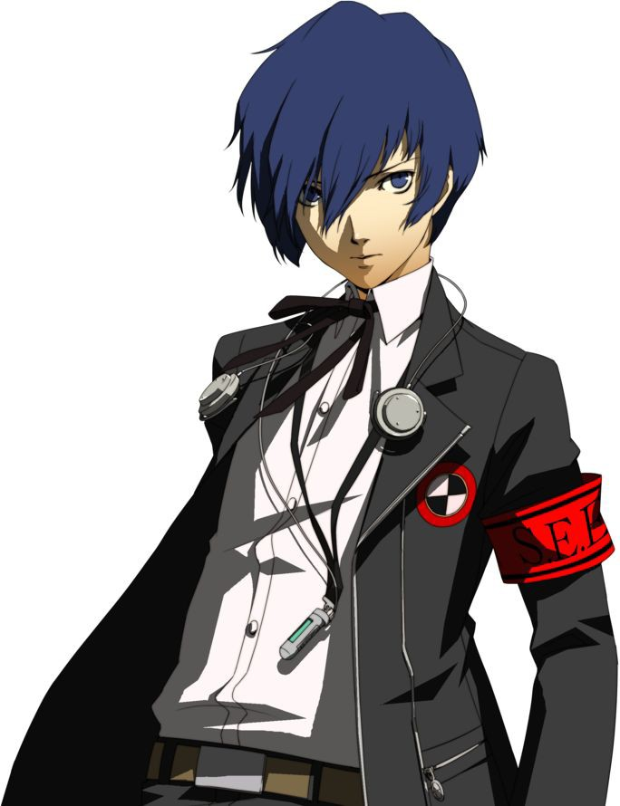

Una pequeña descripcion del personaje principal del videojuego Persona 3
Por Kevin Felipe Vargas Farfán
El protagonista masculino de Persona 3 se llama Minato Arisato, aunque también se le conoce como Makoto Yuki en algunas adaptaciones. Es un estudiante de secundaria que se traslada a la ciudad de Iwatodai para asistir a la Academia Gekkoukan.
Minato/Makoto es un joven tranquilo y reservado, que a menudo se muestra serio y algo distante. Es un líder natural, capaz de inspirar confianza en sus compañeros y de tomar decisiones difíciles cuando es necesario. Además, es un luchador habilidoso y valiente, capaz de enfrentarse a peligrosos enemigos con su arma especial, la Evoker.
Tiene una personalidad tranquila y reservada. Es un joven serio y reflexivo que, en muchas situaciones, parece distante o indiferente. Es un líder natural, capaz de tomar decisiones difíciles y de inspirar confianza en sus compañeros de equipo.
A pesar de su aparente frialdad, Makoto es un joven compasivo y empático que se preocupa profundamente por las personas a su alrededor. A medida que avanza en la trama del juego y forja vínculos con los miembros de su equipo y otros personajes, se muestra cada vez más abierto y accesible.
En general, la personalidad de Makoto se define por su fortaleza, su capacidad para liderar y su preocupación por los demás, combinada con su reserva y su tendencia a mantener cierta distancia emocional. A medida que avanza en la trama del juego y se involucra más en la lucha contra las Sombras, su personalidad se desarrolla y evoluciona en función de las experiencias que vive y las relaciones que forja con los demás personajes
El aspecto físico del protagonista masculino de Persona 3 puede variar ligeramente dependiendo de la versión del juego y de las opciones de personalización elegidas por el jugador.
En general, se puede decir que Minato/Makoto tiene una apariencia juvenil y andrógina, con rasgos faciales suaves y definidos. Es de estatura media, con una complexión delgada y atlética. Tiene el pelo corto y oscuro, generalmente peinado hacia arriba o hacia atrás, y sus ojos son de un color azul intenso.
El vestuario de Minato/Makoto consiste en su uniforme escolar, que es una chaqueta blanca con detalles rojos y una corbata a juego, pantalones negros y zapatos de vestir. Durante las misiones en las torres del Tartarus, suele usar un conjunto de ropa oscura que consta de un abrigo largo, una camisa negra, pantalones oscuros y botas de combate.
